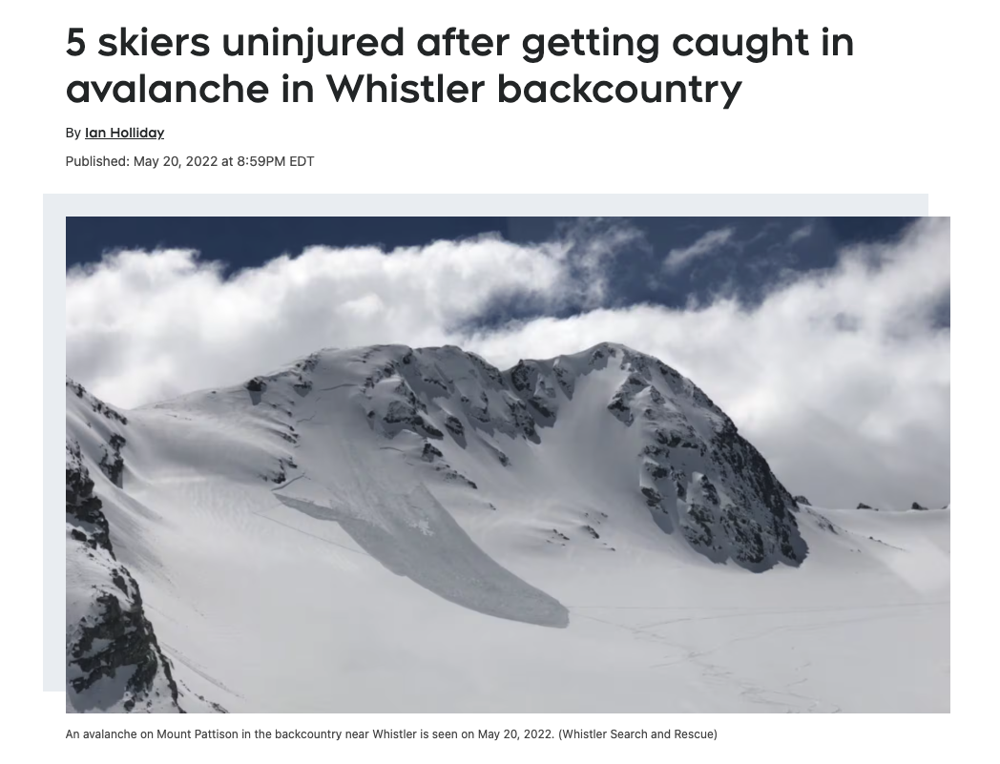

AVALANCHE!! AVALANCHE!!!
Below are clips of some avalanche incident that a backcountry skier could encounter. Remember, the mountains always speak for themselves.
Another Scary Moment!
Don’t worry, all the subjects in the clips were uninjured, but Phew!!! That is why Avalanche Rating is so IMPORTANT!! It helps you make better decisions out there!!
My Personal Story
Four years ago, I was caught in an avalanche along with 4 other skiers. Fortunately, all of us were partially buried with one person buried up to their neck. None of us were injuried.
The Cause? A lack of understanding of avalanche risk, combined with a misinterpretation of the avalanche danger rating.
But what if a more informative avalanche ratings could have prevented the incident. What if it can provide me with an avalanche probability? Or could even tell me the underlying factors that caused it. How useful would that be.
Imagine a model that tells me, with 95% confidence, that there is an 80% chance of an avalanche occurring on this slope (a location that I input) because of (1) current air temperature, (2) 10 cm of recent snowfall in the last 24 hours, (3) a 45-degree slope angle, and (4) more hidden but less important causes.
Perhaps that information would have been convincing enough for me, four years ago, to stay home that day—or at least choose a much safer place to ski.
Below is the avalanche that caught me. I’m grateful and humbled to be alive.

What Is Avalanche Rating?
An Avalanche Rating is a scale on communicating how likely an avalanche would happen.
To help backcountry users make safer decisions, avalanche organizations publish daily avalanche danger ratings. In Canada, these ratings are published on Avalanche Canada and are intended to summarize the overall likelihood of avalanches within a given region. The danger scale typically ranges from Low, Considerable, and High, which is a simplified overview of Avalanche Risks.
These ratings are not meant to dictate whether someone should or should not travel in the backcountry. Instead, they serve as a decision-support tool that helps users understand the general level of risk and encourages them to adjust terrain choices, travel plans, and group behavior accordingly. For novice backcountry travelers, avalanche ratings are often the first layer of information consulted when planning a trip.
Background and Challenges of the Current Avalanche Rating Model
The current avalanche forecasting system relies heavily on field observations collected by trained professionals. Avalanche forecasters and guides travel into the backcountry to dig snow pits, perform stability tests, observe recent avalanche activity, and assess weather and snowpack conditions. These observations are combined with weather forecasts and historical knowledge to produce regional avalanche danger ratings.
This approach is widely trusted and grounded in decades of practical experience. Human observers are uniquely capable of interpreting subtle cues in the snowpack, recognizing unusual patterns, and applying contextual judgment that is difficult to encode into formal rules. However, despite its strengths, this system also has several important limitations.
First, avalanche forecasting is extremely labor-intensive. Traveling through deep snow and mountainous terrain requires time, physical effort, and specialized training. As a result, only a limited number of locations can be directly observed on any given day. Large regions may rely on relatively sparse observations, especially in remote or less frequently traveled areas.
Second, avalanche conditions can vary significantly over short distances. A stability test performed on one slope may not accurately reflect conditions on a nearby slope with different aspect, elevation, or wind exposure. This spatial variability makes it challenging to generalize localized observations to an entire forecast region.
Finally, avalanche forecasting involves inherent uncertainty. Snowpack conditions evolve continuously due to weather, temperature changes, and human or natural triggers. Even with high-quality observations, forecasters must make judgments based on incomplete information. Communicating this uncertainty clearly to backcountry users remains an ongoing challenge.
How Machine Learning Can Help Fill the Gap
Avalanche risk is influenced by many measurable environmental factors, including slope steepness, recent snowfall amounts, air temperature, wind speed and direction, and the layering history of the snowpack. Many of these variables are already recorded through automated weather stations, remote sensing technologies, terrain models, and historical avalanche databases.
Machine learning methods are well-suited to analyzing complex relationships among large numbers of variables. By combining multiple data sources, models can identify patterns and interactions that may be difficult to detect using traditional observation-based approaches alone. For example, a supervised machine learning model could be trained on historical data to estimate the probability of avalanche occurrence under specific combinations of weather and terrain conditions.
Importantly, these models do not need to replace human forecasters to be useful. Instead, they can act as complementary tools that provide additional context or highlight patterns worth closer inspection. A model might identify areas where conditions resemble past avalanche events, flagging regions that deserve increased attention from forecasters. In this way, machine learning can help scale expert knowledge across larger geographic areas.
Another potential benefit of data-driven models is consistency. Human judgment can vary between individuals and over time, especially under fatigue or uncertainty. While models are not immune to bias, they can provide a stable reference point that supports more consistent risk assessment when used responsibly.
What This Does Not Mean: Limitations and Ethical Considerations
Despite their potential, machine learning models are not a silver bullet for avalanche forecasting. Avalanche systems are complex, and no model can fully capture the chaotic and evolving nature of snowpack behavior. Data quality remains a major concern, as models are only as reliable as the data they are trained on. Gaps in historical records, sensor failures, and changing climate conditions can all degrade model performance.
There is also a risk of false confidence. Presenting model outputs without proper context may lead users to over-trust numerical predictions, potentially encouraging risky behavior. In avalanche terrain, overconfidence can have fatal consequences. For this reason, transparency, uncertainty communication, and integration with expert judgment are essential.
Ethical responsibility is especially important in life-and-death applications. Machine learning tools must be designed to support conservative decision-making rather than pushing users toward marginal conditions. Forecasters, developers, and organizations must carefully consider how model outputs are framed and communicated to the public.
What This Means for Backcountry Users
For backcountry skiers and riders, data science-enhanced avalanche forecasting could offer more detailed and timely information about conditions. Improved spatial coverage and pattern recognition may help users better understand where hazards are more likely to exist, even in areas with limited direct observations.
However, these tools should be viewed as aids rather than replacements for education and training. Avalanche courses, field experience, and cautious decision-making remain essential. Data-driven forecasts can support better choices, but they cannot eliminate risk or substitute for sound judgment in the field.
Conclusion
Avalanche forecasting has long relied on expert knowledge, field observations, and cautious interpretation of uncertain information. As data science and machine learning continue to advance, they offer promising opportunities to support and enhance this process. By analyzing large-scale environmental data and historical patterns, machine learning tools can help improve consistency, coverage, and situational awareness in avalanche risk prediction.
At the same time, these tools must be used responsibly. Avalanche forecasting is not just a technical problem, but a human one, where communication, ethics, and judgment play critical roles. When combined thoughtfully with expert insight, data science has the potential to make avalanche forecasting more informative and supportive of safer decision-making in the backcountry.